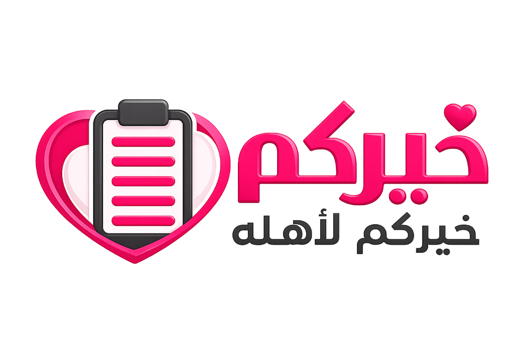
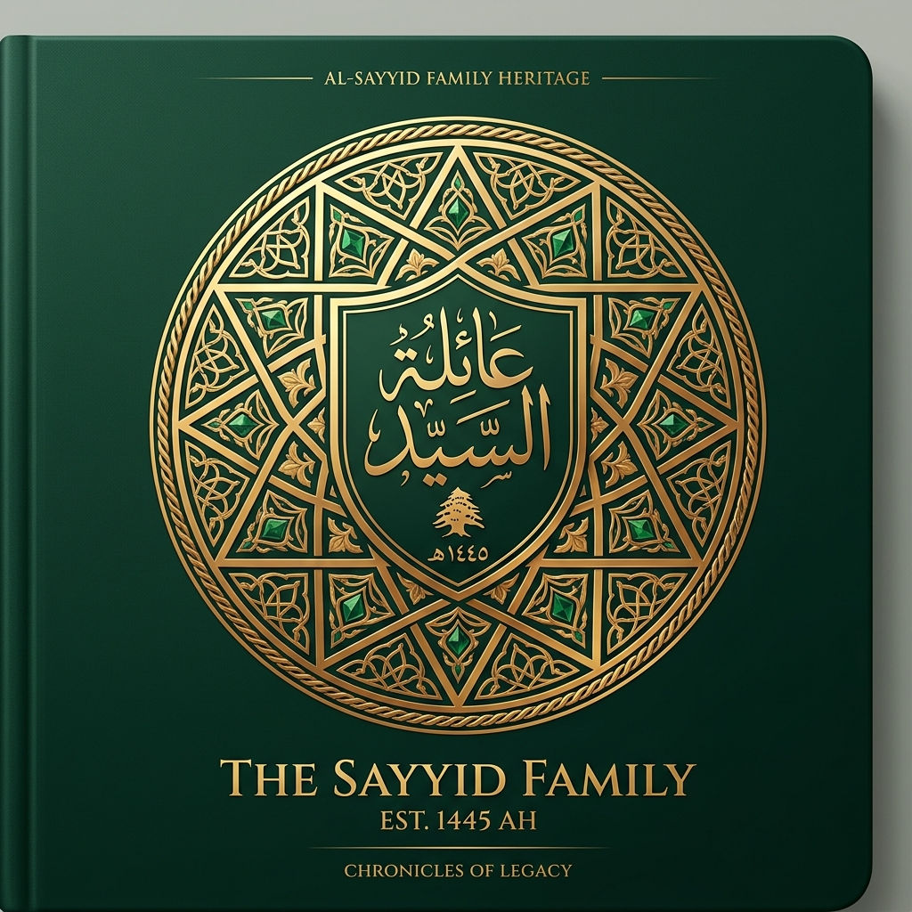
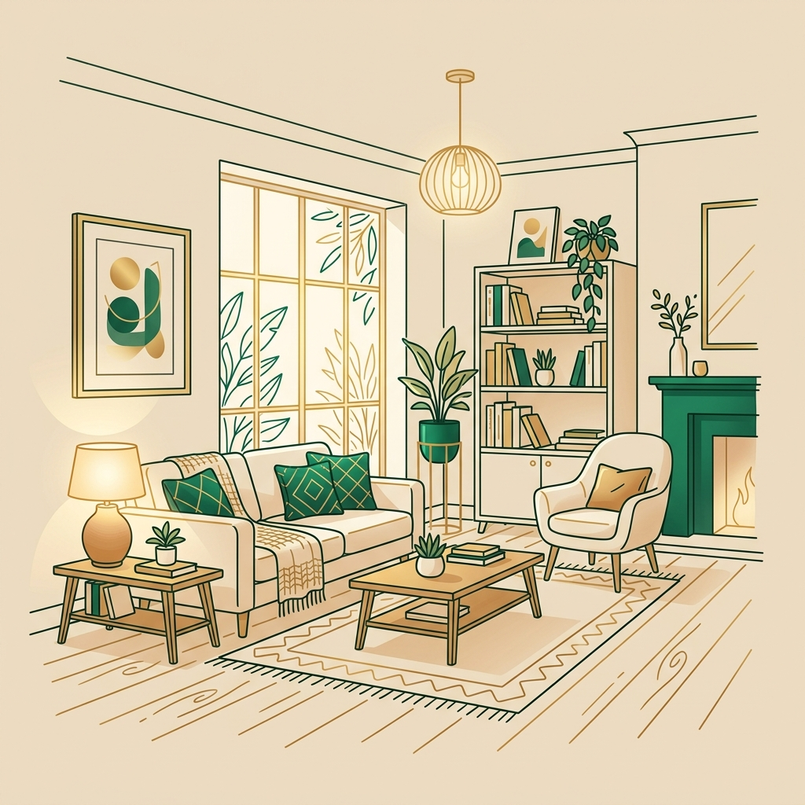
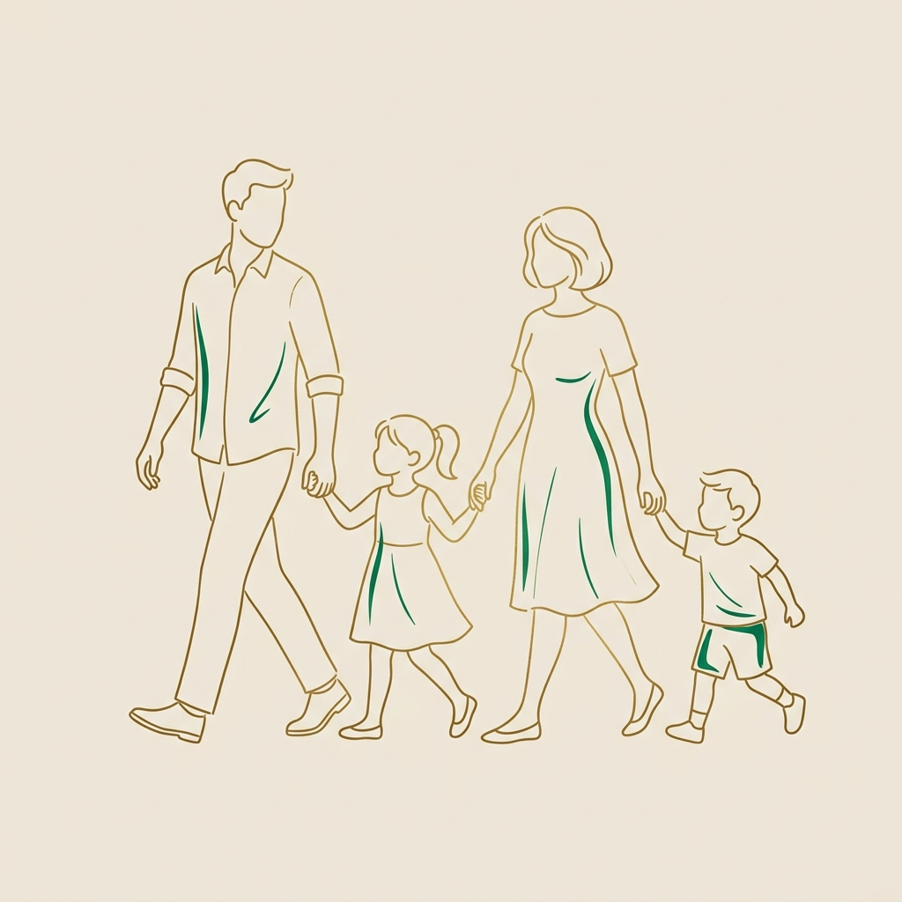
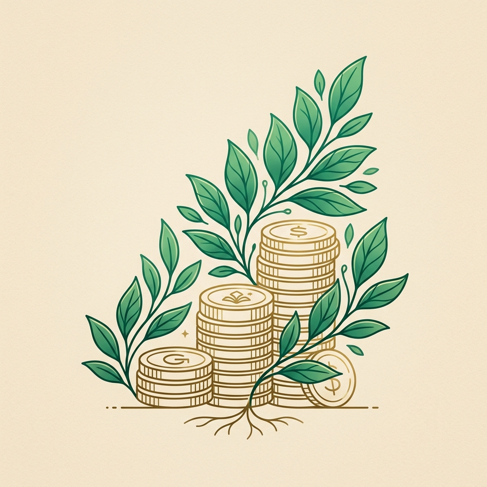
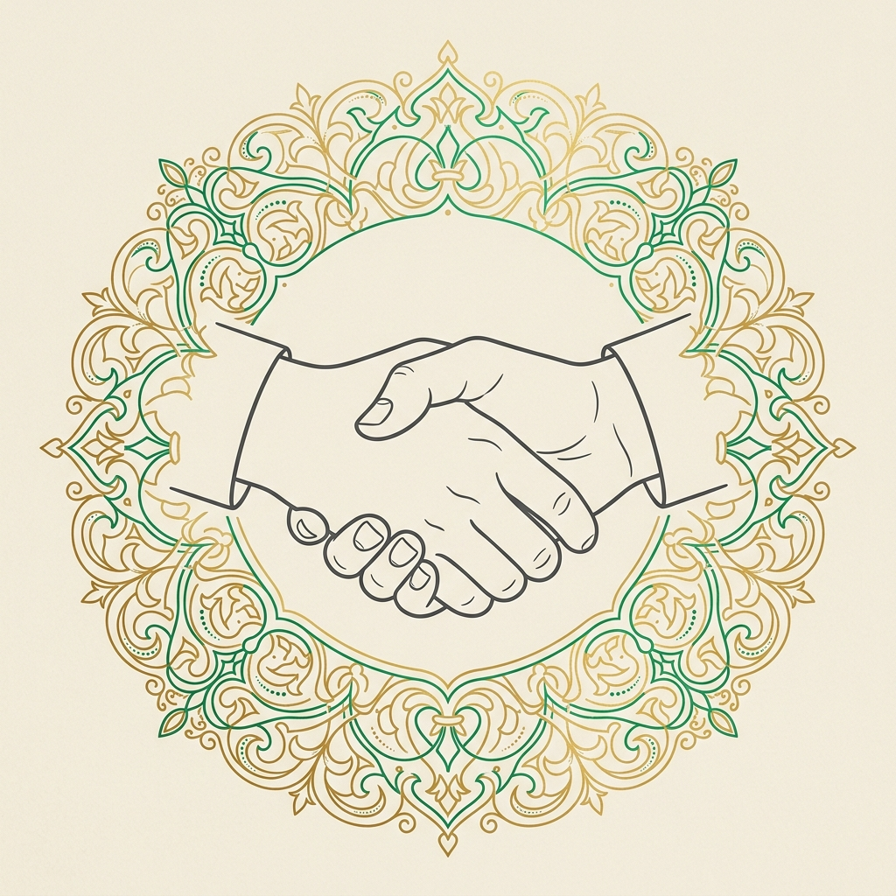
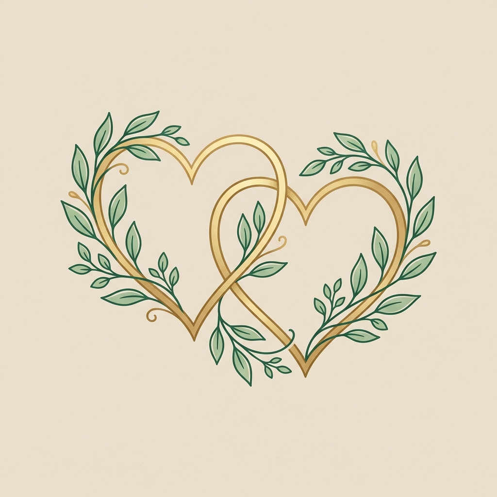

يسعى ديننا الحنيف إلى بناء الأسرة على أسس متينة من الاستقرار والوئام، وتأتي العلاقة الزوجية كأقوى هذه الروابط وأكثرها قداسة.
إن هذا المقياس يساعد على قياس مستوى المشاركة والتوافق الزوجي، ويهدف إلى تحسين جودة الحياة الأسرية وبناء علاقة مستقرة قائمة على المودة والرحمة.
من خلال هذا التقييم، ستقومين بالوقوف على مجالات القوة ونقاط التطوير في العلاقة مع زوجك عبر خمسة محاور أساسية تغطي كافة جوانب الحياة المشتركة، لتكون عوناً لكما في مسيرة التفاهم المستمر والارتقاء بأسرتكما المباركة.
يرجى قراءة كل عبارة من عبارات المقياس بدقة، وتحديد الخيار الذي يعبر عن واقع حياتك الزوجية الفعلي بصدق وموضوعية. لكل إجابة درجة محددة كما هو موضح في الجدول أدناه:
| الإجابة | الدرجة |
|---|---|
| دائمًا – في كل الأوقات | 5 |
| غالبًا – في أغلب الأوقات | 4 |
| أحيانًا – من حين لآخر | 3 |
| نادرًا – قليلًا جدًا | 2 |
| مطلقًا – لا يفعل ذلك إطلاقًا | 1 |





ملخص درجات تقييم محاور العلاقة الزوجية
| المحور | الدرجة المستحقة | الدرجة الكلية |
|---|---|---|
| المحور الأول: جانب المشاركة في الأعمال المنزلية | 45 | |
| المحور الثاني: جانب المشاركة في تربية الأبناء | 80 | |
| المحور الثالث: جانب المشاركة في النفقات الأسرية | 70 | |
| المحور الرابع: جانب التوافق الاجتماعي | 65 | |
| المحور الخامس: جانب التوافق العاطفي | 130 | |
| المجموع الكلي | 390 | |
| التقدير النهائي | __________________ | |
يمكنك مقارنة مجموع درجاتك الكلي بالتقديرات التالية لتحديد النطاق الذي تقع فيه علاقتك الزوجية حاليًا والخطوات المناسبة للارتقاء بها: